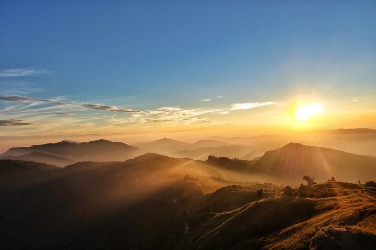

Pemandu Berpengalaman
Pemandu lokal bersertifikat yang hafal jalur dan cuaca Rinjani.
Rasakan pendakian tak terlupakan menuju atap Lombok, lengkap dengan Danau Segara Anak dan matahari terbit di atas awan.
Lihat Katalog PaketGunung Rinjani adalah gunung berapi tertinggi kedua di Indonesia dengan ketinggian 3.726 mdpl. Kawasannya termasuk Taman Nasional dan diakui sebagai UNESCO Global Geopark.
Di kaldera gunung ini terdapat danau Segara Anak dengan luas sekitar 11 km2. Air danau kaya mineral, dan udara di puncak bisa turun hingga 0 °C.
Siapkan fisik dan perlengkapan dengan baik.
Tiket lama Rp 150.000 kini harga tiket mengikuti ketentuan resmi Taman Nasional.
Pemandu lokal bersertifikat yang hafal jalur dan cuaca Rinjani.
Tenda, sleeping bag, dan logistik makan disiapkan oleh tim porter.
Asuransi perjalanan dan standar keselamatan di setiap pendakian.
